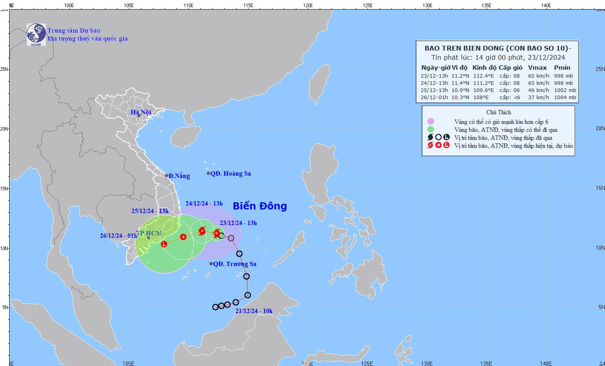

Hồi 16 giờ, vị trí tâm vùng áp thấp ở vào khoảng 20,4 độ Vĩ Bắc; 106,2 độ Kinh Đông, trên đất liền các tỉnh từ Hải Phòng đến Nam Định. Sức gió mạnh nhất ở trung tâm vùng áp thấp giảm xuống dưới cấp 6 (dưới 40km/giờ). Dự báo trong 24 giờ tới, vùng áp thấp di chuyển theo hướng Tây Tây Nam, suy yếu và tan dần. Mưa lớn, gió mạnh trên biển còn duy trì do ảnh hưởng của hoàn lưu vùng áp thấp kết hợp với không khí lạnh tăng cường.
